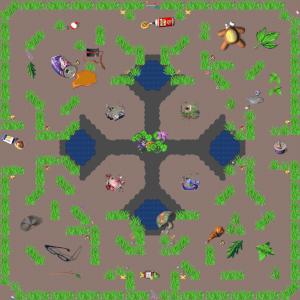
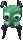
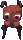
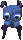
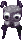
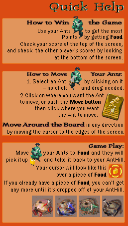
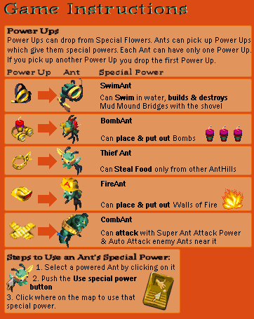

Join the match
The name your ants play under. Leave it empty for a random name. This browser remembers it.Your ants play under this name. Empty: a random one.
← Back to the front pageNew match


Green · You
Red · You
Blue · You
Black · You
Friend: a seat for a person you invite. Easy, Medium, Hard: a bot of that level. Nobody: the seat stays out.
Your choices changed the links (the map, the teams or the seats): copy them again.
Room ... ·
Play in this tab takes the first free seat for you, in this tab, as Join does (you are the first to connect, so you lead the room). The Back button of your browser brings this room back. The other two buttons play every seat yourself, in frames of this page or in windows of their own.
The browser blocked some of the windows: allow pop-ups for this site, or use the buttons of the seats.
The first player to connect leads the room (not necessarily the green seat): its setup screen has the START button, and pressing it starts the match with the players who are in, once at least 2 are. Everybody else waits for the match to start.
In the waiting room, press T (or click the line at the bottom left of the setup screen) to say something to everybody in the room: Enter sends it, Esc closes the line; while it is open the screen's own keys (S, Q, X, Enter) do nothing.
A window that is hidden or covered is not drawn (the browser stops drawing it), but its game goes on playing: it follows the messages of the game server. The match does not wait for it and nobody is told that it lags. Bring it to the front to see the game again. A computer that sleeps, or a phone that locks its screen, stops every page it has: the others play on, they are told after 3 seconds that the seat is lagging, and after 30 seconds without a sign of life it is dropped from the match and cannot come back; a tab that the browser freezes loses its connection when it wakes up, and its seat is lost.
How it works
New match
Four seats: Green, Red, Blue and Black. One is You; press Sit here on another colour to play from there. Every other seat is a Friend (a seat for a person you invite), a bot (Easy, Medium or Hard) or Nobody (the seat stays out). You, your friends and the bots are 1 to 4 players.
With three or four players you can pick Teams: two players start allied.
START! takes this tab into the match. With bots only it starts at once, and with every other seat on Nobody it is a game for one on this computer, as in the original. With Friend seats it opens the room and waits: send each friend the link under Invite your friends (Copy link, or Share on a phone). The match starts when they are all in. Until then the first player in the room can start it with START in the waiting room, with the players who are in (that is you, unless a friend connected first); a Friend seat that is still empty then stays empty. Changing the map, the teams or the seats makes new links.
Have a code?
Paste the code of a match that somebody else made and press Join: you take the first free seat in this tab. The first player in the room can start the match early with START once at least 2 players are in.
On the map
Gather food for your hill, pick up power-ups and keep your ants alive. The original's own help sheets are shown with this text.

